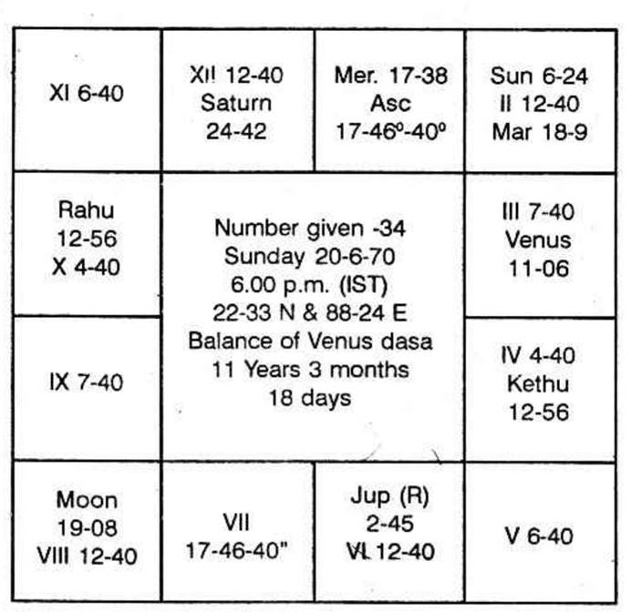

By marriage, it is meant that one more member is added to the family which is indicated by the second house. This addition is an agreement which is denoted by the seventh house and such an additional member brings permanent tie of friendship for pleasure and progeny, shown by the 11th house. That is why houses 2, 7 and 11 are examined to find out whether:
(a) marriage is promised or not;
(b) the description of the partner, his or her ruling planets, whether already related or not; his or her features, characteristics, profession, etc.;
(c) time of marriage; and
(d) state of married life; (1) whether it is a harmonious one promising an inseparable temperament or (2) the couple without any attachment, simply to maintain the prestige of the family, manage to live in the same premises or (3) to lead the life like cat and rats, especially during daytime even though the couple may become the parents of many children or (4) to be going on marrying and divorcing.
Marriage is celebrated in youth or in proper age if (according to Hindu system) –
(a) Moon and Venus occupy fruitful signs. Taurus-Rishaba, Cancer-Kataka, Scorpio-Vrischika, Pisces-Meena and also Sagittarius-Dhanus;
(b) Or if the 7th cusp falls in any of these signs;
(c) Or Jupiter-Guru or Venus-Sukra occupy the houses 2, 7 or 11;
(d) Or Jupiter is conjoined with Moon in 1, 5, 10, 11;
(e) Or Venus is conjoined with Moon in 1, 5, 10 or 11;
(f) And Moon as well as Venus is not aspected by Saturn but is stronger than Saturn;
(g) Or lord of Lagna is conjoined with lord of 7 and occupies a favourable house;
(h) Or lord of Lagna and lord of 7 are in 3 and 11 or 5 and 9 to each other;
(i) Or benefics occupy 2 or 7 or 11 counted from Lagna and Moon sign;
(j) Or the houses 2 or 7 or 11 have favourable connections with benefics
(k) Or benefic in 7 and both lord of Lagna and lord of 7 are strong and well posited;
(l) Or Venus is in his own or exalted sign and lord of 7 in beneficial house;
(m) Or Mercury in 7 and Venus conjoined with lord of 7;
(n) Or lord of 7 is in 11 and Venus in 2;
(o) Or Venus is in Lagna and Lord of Lagna is in 7;
(p) Or if there is mutual exchange between lords of 1 and 7 when it is termed as Madhana Gopalyoga;
(q) Or Jupiter is strong in the 7th house conjoined with benefics;
(r) Or Venus is strong in the 7th house;
(s) Or lord of 7, Venus occupies the 2nd house;
(t) Or lord of Lagna is in 10 and lord of 2 is in 11;
(u) Or benefics in 1 or 2 or 7;
(v) Or lords of 2 and 11 in mutual exchange;
(w) Or lord of 2 and 7 in 11;
(x) Or (according to Western system) Moon and Venus occupy beneficial houses and receive harmonious aspects, in the male's map;
(y) Or Sun and Mars in bride's chart occupy favourable houses and receive good aspects from other planets;
(z) Or a benefic is transiting very close to the Ascendant or 7th Cusp at the time of birth in the 12th house or 6th house.
If it is arranged marriage, the parents may or may not take much pains to find out the bridegroom, if it s a love marriage; then also, the couple may or may not take a long time to give expression to their love to celebrate it.
The following chart is that of a girl who got married at the age of 12, her birth was on 29-6-1926 at 19 Gathis. 45 Vikathis.
Balance of Mars dasa 2 years, 10 months and 19 days. The date of marriage was 11-7-1938, on a Monday in Moolam star. She was running Rahu dasa Mercury Bhukti Moon Anthra.
The Lagna is weak as its lord is in the 8th house and the Lagna is occupied by Saturn. Moon sign is stronger as it is conjoined with the benefic, Jupiter and the lord of the rasi is in the 9th sign in exaltation. Hence Moon sign is stronger.
Second house is occupied by Mars. Its stars are Mrigasirish a, Chitra and Dhanishta. No planet is in Mrigasirish a, none in Chithrai but Moon and Jupiter are in star Dhanishta. Both of them are significators. i.e. Moon and Jupiter, Mars by occupying the second house is next in strength.
11th house is occupied by Ketu. Its stars are Aswini, Makam and Moolam. No planet is found in any of these three stars.
7th house is vacant.
Lord of 2 and 11 is Jupiter. Its stars are Punarvasu. Visakam and Poorvapathra-Rahu was in Punarvasu: Sani in Visaka and none in Poorvapathra.
Hence Rahu and Sani are also significators of the two. Rahu is conjoined with Sun, the lord of 7. So Rahu has greater influence. Sun, the lord of 7, rules Karthikai, Uthrapalguni and Uthrashada. Venus alone was in Karthikai. As Sun conjoined with Rahu get weakened, Venus also will be offering the results of the 7th house.
Hence Moon, Jupiter, Rahu, Saturn and Ketu are the significators, Mercury in the constellation of Saturn, and aspected by Saturn, is also auspicious. It gains strength to give marriage.
A node, conjoined with a planet gives the results of the planet. As Sun rules the 7th house, Rahu is to bless her with marriage since Rahu is conjoined with Sun. Further, it is under the sway of Jupiter, lord of 2 and 11, counted from the Moon sign.
Saturn in Lagna cause delay in marriage. It can, till its period is over. Even though Budha is aspected by Sani according to Hindu method by the 10th aspect, yet they are 108° away and form good aspect. If it were to be 90°, Mercury cannot give the wedding. Being 108° away, Mercury will be helpful.
To dasanatha Rahu, Mercury is, in advance, in the second house. Therefore Rahu Dasa Mercury Bhukti was the period of marriage.
(1) Moon and Jupiter in close conjunction is auspicious for early marriage;
(2) Moon and Jupiter in 5 to Lagna is favourable to celebrate the marriage in youth,
(3) Venus, lord of Lagna and Mars, lord of 7, are in 3 and 11 to each other.
This horoscope is illustrated to show that very early marriage can take place, even though exalted Saturn was in the ascendant as Jupiter by its aspect to Saturn reduces its malefic results and the conjunction of Moon and Jupiter is very beneficial.
Marriage is promised but it comes off late in life:
(a) If Saturn is either in 1, 3, 5 or 7 or 10 counted from Lagna or Moon sign and if he does not own beneficial houses;
(b) If malefics are in the 7th Bhava, receiving adverse aspects from Jupiter or Uranus;
(c) If Mars is in the 8th house;
(d) If Moon and Saturn conjoin together especially in 1, 2, 7 or 11.
(e) If Mars and Venus are conjoined together in 5, 7 or 9 and both receive evil aspects from Jupiter or Uranus;
(f) If the lord of 7 and Venus are aspected by Saturn;
(g) If Moon and Venus are squared by Jupiter or Uranus.
There will be many proposals, one after another they will fall through and years will pass on. The parents and the bride will get so much dejected and vexed that the bride decides to remain unmarried. But at last, a fresh negotiation will come up with a new party and the marriage will be fixed and celebrated suddenly.
The following ones are the charts of two individuals; one male and another female and both are to be married.
Born on 2-4-1926 Friday at 39G, 40 V, in Anuradha star with a balance of Saturn dasa for 9 years 11 months and 27 days.
Saturn is not a Rajayogathipathi, nor does he own the rasi.
In the chart of the boy -
Second house is occupied by Ketu and it delays marriage.
Lords of 2 and 11 are in debilitation. Venus lord of 7, in 4 will offer the marriage.
Moon and Jupiter forming favourable aspect, will on a later date settle a family life on you.
Saturn dasa balance 9y 11m 27 d
Moon dasa balance 2y 6m 19 d.
Hence, Venus Dasa, Moon Bhukti, Jupiter Anthra will give the marriage at the end January 1965 itself.
In the Girl's horoscope
(a) Evil node in 7 shows delay (Rahu);
(b) Mars in 8 shows hindrances and obstacles;
(c) Saturn aspects the 11th house;
(d) Moon in Capricorn is afflicted by Saturn, the relative position between the two being 22 1/2 degrees.
The above are the indications showing that the marriage will be accomplished with great difficulty.
The time of marriage will be during Jupiter Dasa, Jupiter Bhukti, Rahu Anthra on or around 14th July, 1965. Actually the marriage was fixed in June and celebrated on 14-7-1965.
A gentleman who is the partner of a firm asked the longevity of his partnership. The relationship with partners were going from bad to worse day by day. The querist gave Number 34 and the Chart was prepared as follows:
Moon indicates the position of mind. She is in 2nd from 7th Bhava in the Star of Venus and in the sub of Rahu. Venus is the Asc. Sign lord and Rahu is posited in 10th in his own star and in Mercury sub. 1st Cusp is in Moon star and in Mercury sub. Chandra star Lord Venus is in Moon sign, Saturn star and Moon sub. 7th Cusp falls in Mercury star and sub. So the query is related to himself for business partnership and its longevity.
For partnership 7th Bhava is to be judged and for its longevity the Maraka and Bhadhakasthana of 7th are to be judged. 7th cusp falls in Scorpio which is a fixed sign. So 9th from it is the Bhadhakasthana for it. It is 3rd from the Asc and falls under Cancer sign, Saturn star and Ketu sub. The Maraka Sthanas are in Sagittarius and Taurus signs ir. Ketu star, Mercury sub and Moon Star, Mercury sub respectively. Let us judge each House separately.

Bhadhakasthana is under Cancer sign, Saturn star and Ketu sub. Venus is posited there. Moon and Saturn are in Venus stars and hence they are the strong significators of this Bhava. Besides these, Venus is also the significator of this Bhava.
2nd Bhava from 7th is under Sagittarius sign. Ketu star and Mercury sub. Moon is posited there and Mercury, the only planet in her star, is the strong Significator of the Bhava Moon is the second grade significator and Jupiter being the sign lord is the 3rd grade significator of this Bhava. Second Marakasthana is in Taurus sign, Moon star and Mercury sub. Sun is posited there. No planet is in Sun star. Hence it is the strong significator of this Bhava. Moon and Saturn are the 2nd grade significators being in the star of Venus who is the sign lord of this Bhava. Rahu and Ketu are also the Significators of these Houses. Hence Moon, Saturn, Venus, Mercury, Jupiter, Sun, Rahu and Ketu are the significators of Bhadhakasthana and Marakasthanas. To select the few strongest and to eliminate the rest, Prof. K. S. K. suggests to see the Ruling Planets at the time of Judgement and these are as follows :-
Saturn - Day-lord for Saturday
Venus - Moon Star
Jupiter - Moon Rasi Lord and Asc Lord
Rahu - Lagna Star Lord.
Now he is running Venus Dasa, Rahu Bhukti and Mercury Anthra. Now I was disturbed by some visitors and the work had to be stopped. Again on 26-6-'70 Friday at 5.30 P.M. the Judgement was considered. The ruling planets were as follows :-
Venus - Daylord
Saturn - Moon star Lord
Jupiter - Moon Rasi Lord
Mars - Asc. Lord
Mercury - Asc. Star Lord
On 13-8-'70 he will run Venus Dasa Rahu Bhukti Mercury Anthra and Saturn Sookshma till 8-9-'70 and this period favours the desolation of Partnership.
Here Anthara Lord Mercury is very important as it is the sub-lord of 11th Cusp from Asc. as well as for seventh. Besides this Mercury is also the sub-lord of Asc. 2nd, 5th, 6th, 7th, 8th, 11th and 12th Cusps. Nodes are in the sub of Mercury. So Mercury being the chief among the Karaka Planets of Business, promises for the desolation of Partnership, but besides this it also promises that the querist will not close the firm out right and he will do his business under the same name and style by making an another partnership deed and this event will happen between 13-8-'70 to 8-9-'70. Now let us check the transit period and see whether it tallies with ruling planets or not. Mercury will be retrograde on 31st August, and hence she will contribute the results before 31st August.
In transit on 28th August Friday, Sun will be in Ketu star and Mercury sub Moon will be in Saturn star, Saturn sub and in own sign. Dasanath Venus will be in Mars star, Jupiter sub and Mercury sign. Bhuktinath Rahu will be in his own star, own sub and in Saturn sign. Antharanath Mercury will be Sun star, Saturn sub and in own sign having a rapt conjunction with Sun who is deputised by Ketu. Sookshmanath Saturn will be in Mars sign, Sun star and Rahu sub. Thus the transit agrees with the fructification of results.
Respected Sir,
These days I am reading your "Krishnamurti Padhdhati". Really as much as I read it so much I am being impressed by your profound knowledge in Astrology. Truly speaking, you are an incarnation of some great Maharishi. Your magazine 'Astrology & Athrishta' is great unparallel. You and your method are unique, original and great. Really you are proud of Mother India.
I find no words to thank you for writing a great book like 'Krishnamurti Padhdhati' which would prove to be unique work and make your name ever shining in golden words in the world of Astrology. Please accept my humble respects.
Yours Devotee
(Sd.) B.M. Sharma, M.Sc.,
Indore.
Name: P.K. Rangachari
Profession: Doctor
I must acknowledge Mr. Krishnamurti's remarkable accurate predictions based on my horoscope. He had told me that I would be in a foreign country from the 15th August, 1968. At the time of my consulting him, my chances of going abroad were far remote. But it so happened that as he had predicted. I left Delhi and touched Teheran on the morning of 15th August 1968. This appears to me quite remarkable.
P. K. Rangachari,
19th Aug. '68 University of Alberta
Etmonton, Canada
Learned Dear Sir,
Excuse the delay in conveying my thanks. As predicted by you, I started only on the 16th May from Nagapattinam. Even though the ship was due to start on 15th and I boarded the ship on the 15th, the ship started only on 16th owing to delay in loading cargo. I came here on 21-5-68. People here have come to know that I am an astrologer and want to consult me.........................
(Sd.) V. S. Mani
C/o A. Ramiah
1869 Thana List, Bukit Martayam
P.M. Central Malaysia.
From
S.C. Deb,
B.A., C.A., I.I.N., A.C.I.S. (Lond.)
Chartered Secretary, Calcutta
To
Jyotish Marthand K. S. Krishnamurti
12 Brahmin Street
Saidapet, Madras-15.
Dear Sir,
Last year you predicted that my friend Sri Sukumar Bhattacharjee, one of the officials in Labour Bengal, would proceed to foreign country on the 15th April 1968 and I am delighted to inform you that he left Calcutta, for Canada on the same day as predicted by you. I received his first letter to-day.
While I was talking to another officer of the same department, he said that you predicted to him that he would visit many countries in 1967 and actually he went, as predicted by you. Only comments, I dare make that you are wonderful and how accurate your predictions are.
Thanking you,
Yours faithfully,
S.C. Deb.
Dr. T. T. Padmanabha Rao
Lecturer in Chemistry,
5/953-Krishanpura,
Hanamkonda,
Warrangal.
Shri Pujya Krishnamurti Garu,
Namasthe!
I am happy to inform you that I have been selected for West German Scholarship and the schedule of journey is on 9th June 00:20. I am happy to inform you that what you predicted for me, when you came to our college recently came true.
I request I may have your guidance in my path.
Thank you,
Yours faithfully,
T.V. Padmanabah Rao
11-4-68.